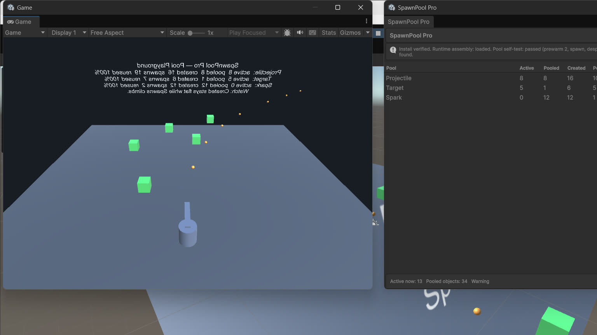
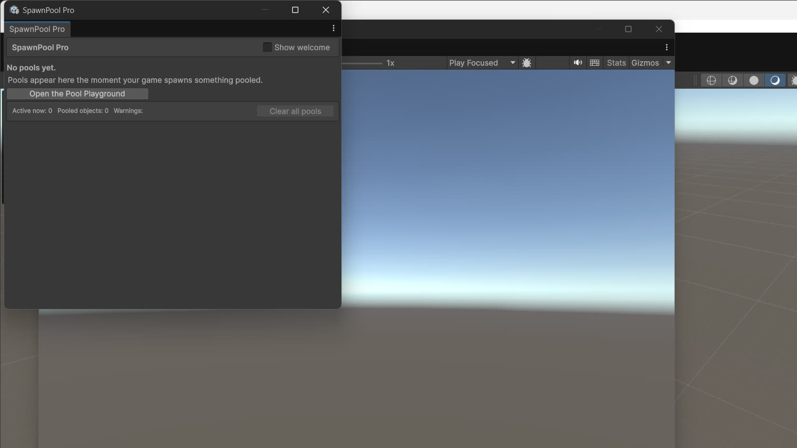
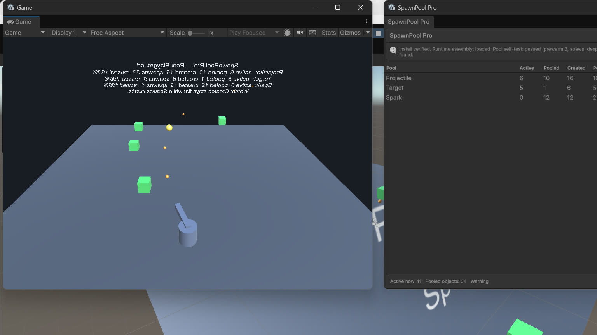

SpawnPool Pro · ByteLura
Pool anything. See what it costs.
SpawnPool Pro is object pooling for Unity with one difference that shapes the whole product: it shows you what your spawns cost.

What SpawnPool Pro does
Repeated Instantiate and Destroy calls — bullets, enemies, pickups, effects, floating combat text, and everything else an action game creates and discards hundreds of times a minute — cause garbage collection spikes and frame hitches. Pooling solves that by keeping instances and handing them out again.
SpawnPool Pro pools, and then reports, per pool, exactly what happened: how many instances are active, how many are waiting, how many were ever created, the peak in use at once, how many spawns were served from stock versus newly created, how many spawns were refused at a growth cap, and whether anything was returned twice or returned by mistake.
Who it is for
Unity developers whose games create and discard objects in volume — projectiles, enemies, pickups, effects, damage numbers — and who want pooling they can measure, not just pooling they have to trust. If your game churns objects every minute of play, this is the tool that pools them and proves the reuse on screen.
The two pool kinds
GameObject pools
One pool per prefab, behind a single static facade, PoolManager. This is the front door most games use.
Typed pools
Pool<T> for plain C# class instances — projectile logic objects, damage events, tokens, and any other reference type your game creates and discards in volume.
Both kinds expose the same ideas: prewarm, growth caps, live stats.
The dashboard is the product's face
Open Tools > ByteLura > SpawnPool Pro. The window is both the product home — a welcome block with quick actions on first open — and a live dashboard during Play Mode: one row per pool with its counts, an attention area for long checkouts and warnings, and live totals in the footer. See Dashboard & Analytics.
What is in the package
- Runtime: typed pools, GameObject pools, the static
PoolManagerfacade, pool statistics and analytics, delayed despawn, a scene preloader component, and lifecycle callbacks. - Editor: the SpawnPool Pro home and dashboard window, plus a built-in Verify Install check.
- Sample: Pool Playground — a turret firing pooled projectiles at pooled targets with pooled hit sparks, and live counts on screen.
- Documentation: a Quick Start and an API reference ship inside the package; this site expands on both.
Design commitments you can rely on
- After prewarm, the spawn and despawn hot path performs no managed allocation in the shipped automated test on Unity 6000.5.4f1 and Unity 2022.3.22f1. (See Honest Limits for the exact scope of that statement.)
- A pool never silently exceeds its growth cap.
- Misuse — a double return, a foreign return — is detected, counted, and surfaced, never thrown into your game loop and never swallowed silently.
- No package dependencies, no telemetry, no network calls. Analytics are live and in-memory only.
- The runtime contains no Editor code. A player build contains the pooling runtime and nothing else.
Honest scope, up front
Version 1 is deliberately not an Addressables integration, not a networking solution, not an analytics history tool, and not self-tuning — and the typed pool covers reference types, not structs. The full list, stated plainly, is on the Honest Limits page. Read it before planning around the product.
In the editor



Where to go next
- Quick Start — pooled spawning in about five minutes.
- Installation & Setup — installation, the window, and the Verify Install check.
- Honest Limits — what version 1 is not.
Support
Support is at bytelura@gmail.com — the one support door for SpawnPool Pro, so nothing gets lost between inboxes. See Support & Scope for what to include when you write.